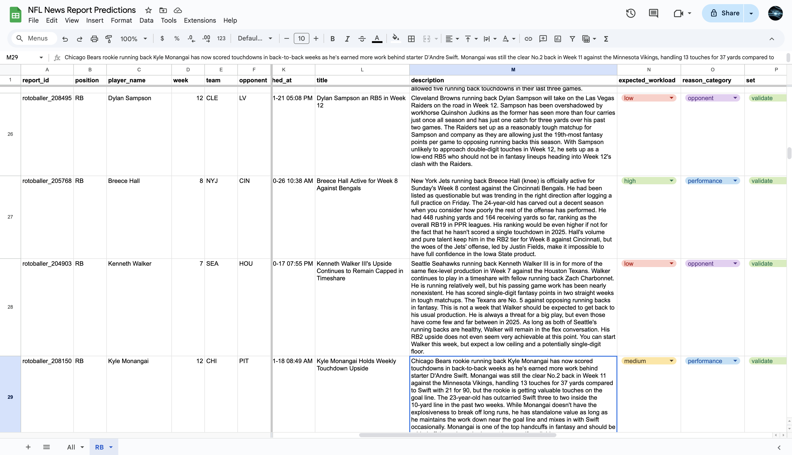
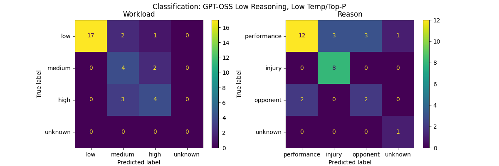
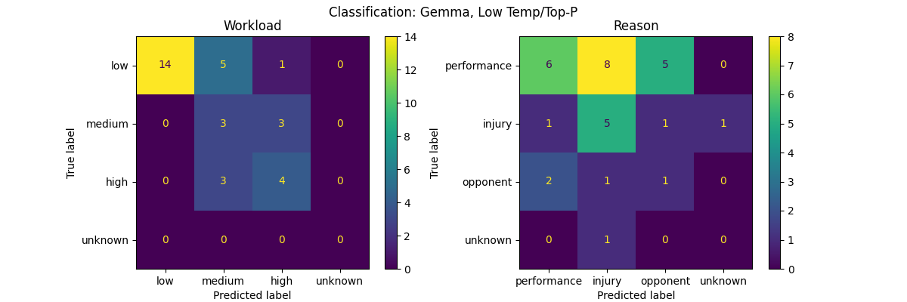
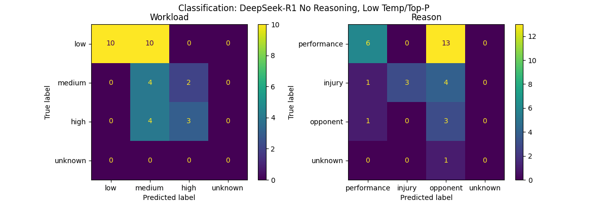
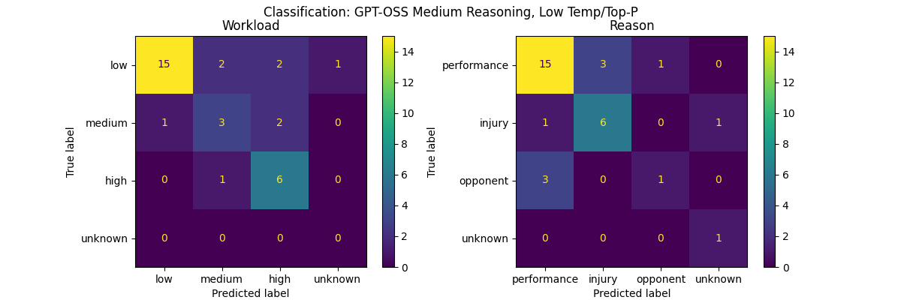
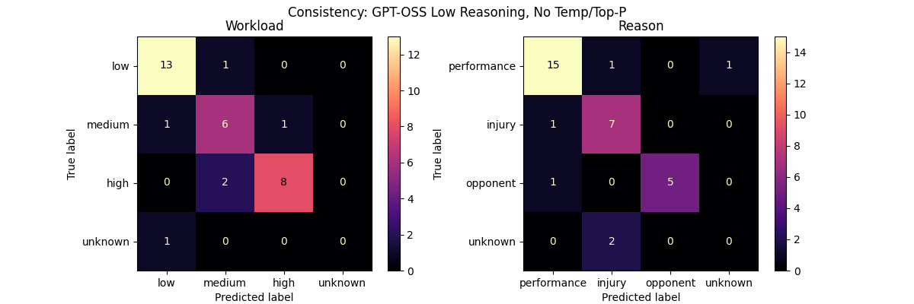
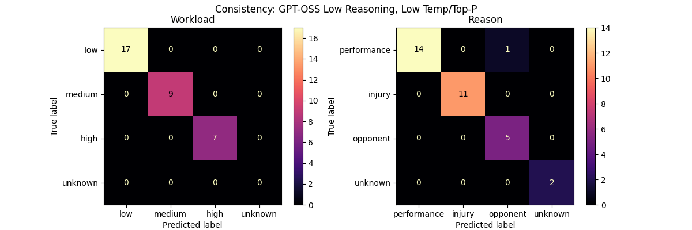

Introduction
When Carolina Panthers running back Chuba Hubbard went down with an injury in week 4 of the 2025 NFL season, did you immediately pick up Rico Dowdle?
If not, would this news report have enticed you?
If you did snag and start Rico Dowdle in week 5, you would have played the number one running back.
This report provides seemingly reliable intelligence:
- Chuba Hubbard is injured
- Rico Dowdle will take his workload
- Their next opponent, the Dolphins, are weak against the run
Points 1 and 2 are clear enough for a reader to expect that Rico Dowdle will get more touches in week 5. Whether he will produce scoring value from those touches is harder to say. Point 3 is a bit more open-ended: maybe the Dolphins will have a better matchup against the Panthers or maybe Rico Dowdle will struggle in a lead role.
Fantasy performance can be unpredictable. But maybe player workload is more predictable.
There are endless articles, podcasts, and commentary about the NFL and fantasy football that could provide insight or gossip to inform your fantasy lineup. But these fantasy news reports are a bit more concise and standardized. We can standardize them even further.
How often do these reports accurately predict how much a player will get the ball in the next game?
This project uses a large language model to distill each report down to a single signal on the player's expected workload level, then compares the expectations to their actual workload.
Methodology
To answer this question, I analyzed 2,000 fantasy news reports about running backs from the 2025 season.
The process boils down to this:
- Assign reports to upcoming games
- Classify expected workload from reports
- Compare against actual workload
Data Collection
I sourced the player statistics and news reports from Sleeper and RotoBaller. The criteria for inclusion were:
- Player is an active running back or full back (can always add WRs and TEs later)
- Player only played on one team during the season (simplifies matching reports to games)
- Report is after week one (too much volume and noise in reports before the season starts)
- Report is prospective, discussing expectations for next week, not just a recap of the previous week
- Player actually played in the game the week of the report
- Player also played in the game the week before the report
Luckily, criteria 4 was easy to enforce because Sleeper and RotoBaller separate game recaps as "analysis" news. Choosing only the non-analysis reports led to the kind of reports aimed at fantasy managers trying to decide who to start and who to sit.
This whittled us down from over 5,000 potential reports to 2,040 reports, covering 117 players.
Data Labeling
I randomly sampled 36 reports from that set and manually labeled them.
Each report is classified into both an expected workload level and a reason category.
Expected workload level:
- High: more than 20 touches (carries + targets), usually the lead back
- Medium: 10-20 touches, usually a split backfield
- Low: less than 10 touches
- Unknown: cannot be determined from the report
Reason category:
- Performance: the player is playing well, taking touches from a teammate who is playing worse, etc.
- Injury: the player is injured, back from injury, their teammate was injured, etc.
- Opponent: the team has a good or bad match up next week
- Unknown: none of the above or cannot be determined
Manually classifying the reports made me optimistic that a large language model could do the same.
I used three of the manually-labeled reports as examples in the model prompt and the remaining 33 as a validation set to score different models. More details on this in the model selection section at the end.

The goal is to determine how well fantasy reports predict workload, not necessarily performance.
Here is a good example. This report points out that Bears running back D'Andre Swift could lose touches to standout rookie teammate Kyle Monangai in a split backfield situation. Indeed, in week 6 against the Commanders, Swift only got 17 touches, which is within our defined range for a medium workload, but he made full use of those touches, supplying a receiving touchdown and clocking as the #6 fantasy running back for the week.
Comparison Metrics
Finally, I compared the expected workload level extracted from the report to the player's actual number of touches (carries + targets) in their next game.
Primarily, I used two metrics to analyze how well these reports predict actual workload:
- Precision: when a report suggests a certain workload level, how often is that what actually happens?
- Recall: out of all players who had a certain actual workload level, how many did reports predict?
As you can imagine, there are far more players with low or medium workload than high workload. So it will be easiest to interpret the precision and recall scores if we break them out by each workload level.
Results
Overall
Spoiler alert: fantasy news reports are not particularly predictive of actual workload.
Loading data...
Fantasy reports seem to trend optimistic: the reported expectations are higher than the actual workloads.
Since there are more actual cases of low workloads than medium or high, that also makes it easier to predict low workloads.
- 66.1% of reports that expect low workload are actually correct (precision)
- 61.2% of all low workloads were correctly expected by reports (recall)
Of course, fantasy managers want to know about high workloads.
- Only 40.4% of reports that expect high workload are actually correct (precision)
- While 64.4% of all high workloads were correctly expected by reports (recall)
Having good recall but low precision indicates excessive optimism.
This report about Saquon Barkley suggested that he would be an RB1 in week 5 against the Broncos. But in the end, he only got six carries and three targets. Who could have expected that the Eagles would run the ball just once in the second half while protecting a 14-point lead?
Reports want to encourage us that a player will get a lot of touches, so they spread a wide net and capture the 64% of cases where the workload actually was high. Another way to look at that recall score is that roughly 36% of actually high workloads were unexpected based on reporting: the breakout workhorses that the news did not expect.
The medium workloads are even harder to predict, with both sub-50% precision and recall.
Misclassifications
For the cases where the reports are wrong, in which direction are they wrong?
To understand this, we look at a confusion matrix: the rows represent the actual workload and the columns represent the expected workload.
Loading confusion matrix...
The corners show the fringes:
- Breakout stars: 33 reports predicted a low workload, but the player actually had a high workload
- Underperformers: 86 reports predicted a high workload, but the player actually had a low workload
- Unclear: 62 reports were not clear on expected workload level (summed up in the unknown column)
Here is a case where our model could not figure out the expected workload level from a report:
The report provides some objective data (only 13 carries between the two backs) but ultimately pins the blame on penalties. This makes it unclear what the report expects Jones' workload to be next week.
Whether the Vikings cleaned up their act, or whether O'Connell decided to feed Jones the rock, or whether the Bears defense sh*t the bed, Aaron Jones got a high workload in week 11: 16 rushes and six targets. Meanwhile, Jordan Mason only got six carries and wasn't involved in the passing game at all. Who could have guessed?
Reasons
Are certain types of reports more predictive of workload?
Once again, the trend is that lower workload, which is more common, is easier to predict. Especially when it's tied to an injury report.
In reality, a fantasy report will base its recommendation on multiple reasons, but I urged the model to narrow it down to the dominant reason, if any.
Loading data...
Injury is the biggest theme amongst the reports, but it can reflect in multiple ways:
- Fairly obvious: A player is injured, so their workload will be low or none, this is correct 70.1% of the time (precision)
- More speculative: Another player is injured, so this player will get more workload, correct 38% of the time at the medium workload level and 29% at the high workload level (precision)
Rico Dowdle's meteoric rise to power in week 5 is a great example of a breakout performance that could have been predicted by an injury to the lead back.
Here is another interesting example where an injury report tempers expectations for a lead back:
RotoBaller warned us that even though Zonovan Knight might play in week 9 against the 49ers, his workload could be lower. Knight's fantasy value was salvaged by a rushing touchdown, but the report correctly predicted that Knight would not eclipse 10 touches, getting just five carries and four targets.
Performance is a more nebulous category. It makes sense that low performance predicts low workload, but we also get closer to 50% on expecting medium or high workload based on performance. Recall is high here, with 78.6% of actual high workloads having been predicted by a news report. This could be because the top running backs on each team are likely to reliably get a high workload each week.
Reports based on opponents can also go either way. If a report says a player will get low workload, maybe due to a tough opponent, that only actually happened in 46% of cases (precision). If you read a report saying that a player could exploit a weak opponent to get a high workload, that was only correct in 39% of cases (precision).
Here is an example of a report classified as opponent-based that also discusses performance, but ultimately takes a pessimistic outlook.
Ultimately, Jeanty got a high workload with 19 carries and 5 targets, putting up a respectable 15 points in PPR leagues. You could be forgiven for not acting on this report.
Seasons
Do report expectations get more predictive of workload as the season goes on?
Loading chart...
The precision and recall rates fluctuate week-to-week, but only a few weeks go above 50% precision.
The early weeks having higher precision rates could be an artifact of data collection. I made what I thought was a high-end estimate of 15 reports per player per week, since most players I looked at only had one or two reports. With 18 weeks in the season, I fetched the most recent 270 reports per player. However, if a particularly popular player had more reports than that, those reports might not have been captured, leading to data loss in the early season.
I noticed that the number of reports for a player were greatest leading up to week 1, when fantasy managers are getting ready for their drafts, and during a player's bye week, building anticipation for how they will play on their team's return.
Game Day
Are reports on game day more predictive of workload?
Let's compare two reports for the same player and game.
Consider this report from a few days before the game that expects a medium workload for Steelers' running back Kenneth Gainwell due to a split backfield with Jaylen Warren.
Later, a timely game day report before Monday Night Football alerted fantasy managers that an illness to Jaylen Warren could boost Kenneth Gainwell's workload.
Unfortunately, the trend is that game day reports are not much better than reports in the week leading up to the game. As far as predictive power, they might even be a bit worse.
Loading data...
If you read a high workload report from the week leading up to a game, there is only a 40.5% chance that player will actually have high workload, while a game day report has only 38.4% chance (precision). However, game day reports capture 71.4% of all high workload players, in contrast to week before reports that only capture 64% of them (recall).
All Reports
Below, you can browse all 2,040 reports, their extracted predictions, and the players' actual performances.
Loading data...
All code, prompts, and data for this project can be found on the GitHub repository.
Model Selection
To reduce the environmental impact of this silly project, I used Ollama to run all the models locally.
Classification
I compared Gemma and GPT-OSS. On the validation set, GPT-OSS performed slightly better on workload classification and much better on reason classification.


I even gave DeepSeek-R1 a try to see how global fantasy football really is. But even its low reasoning had prohibitively long inference time, so I tested only no reasoning.

Reasoning
I also tested GPT-OSS on medium reasoning and found that the inference time was six times slower than low reasoning, for only a modest gain in quality. I want to finish this project before the Bears break ground on a new stadium, so that was a non-starter.

Consistency
Large-language models are non-deterministic, but I needed more consistency for this exercise. To test consistency, I simply ran each model on the same validation set twice and created a confusion matrix to compare its predictions from the first run with its predictions from the second run.
With no hyperparameter tuning, the model strays from its own path 18% of the time: six out of 33 samples changed their expected workload level and seven changed their reason category.

To improve consistency, I tweaked two hyperparameters:
- Temperature influences the amount of "creativity" in the response, with higher values being more unexpected and inconsistent
- Top-P restricts which next words can be selected to a certain threshold of likelihood
When we set the temperature to 0.25 and top-p to 0.5, the model consistency improves. Now, no samples change in expected workload level and only one sample changes in reason category. We do get two new samples with unknown reason category, though.
